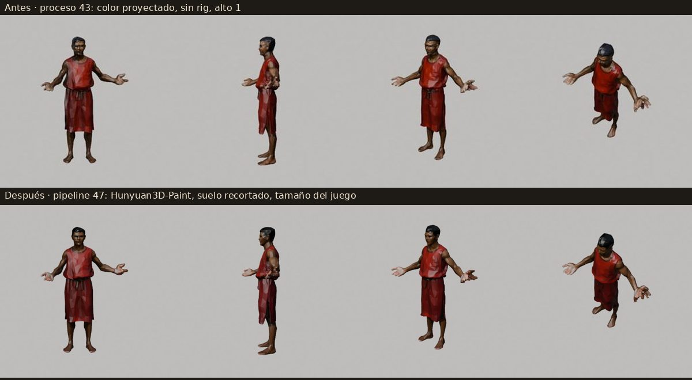
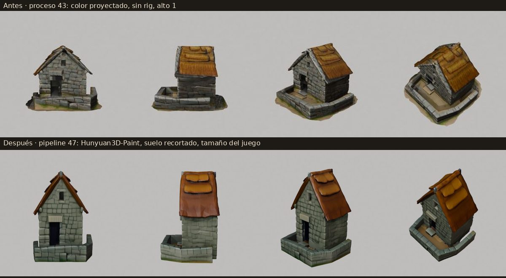
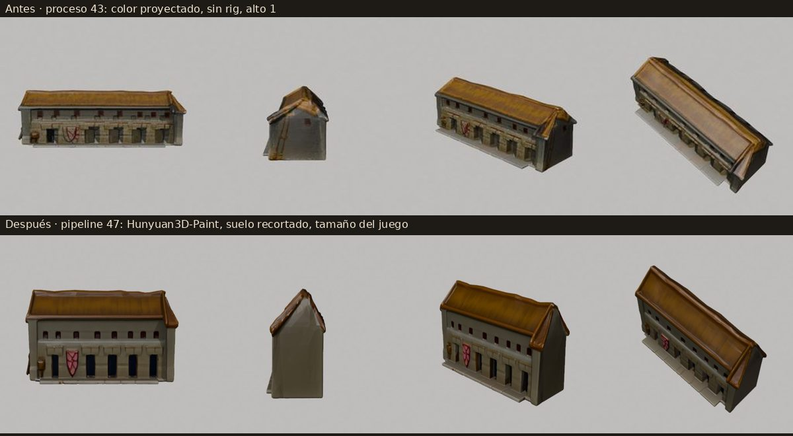
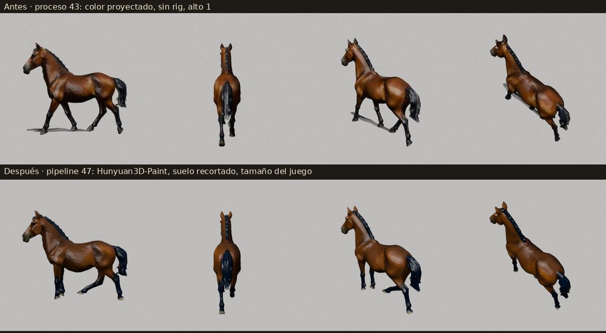
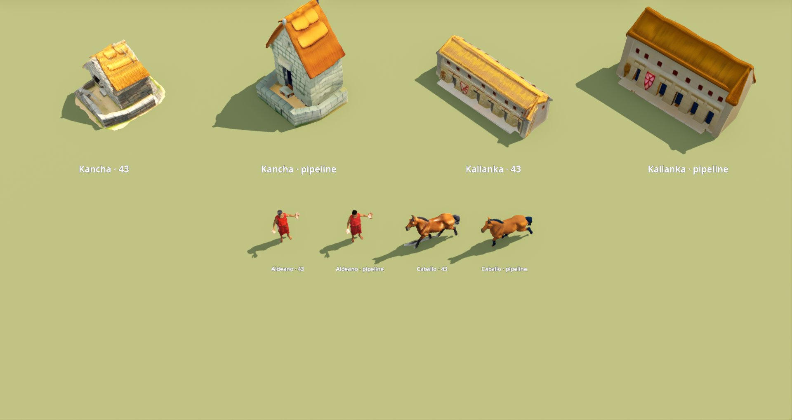
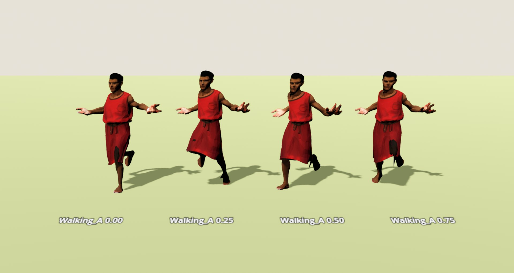
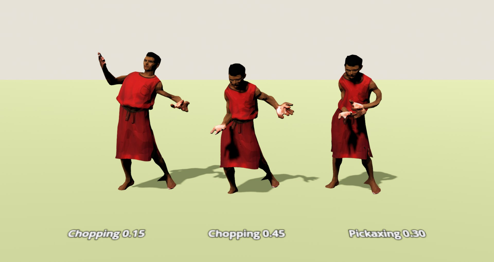
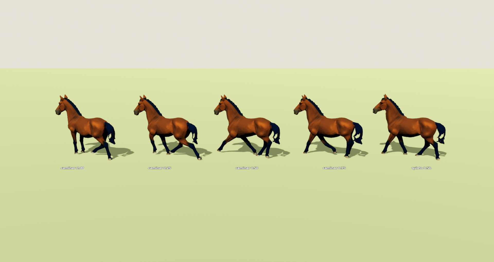
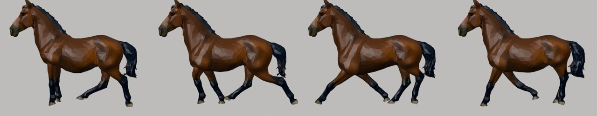
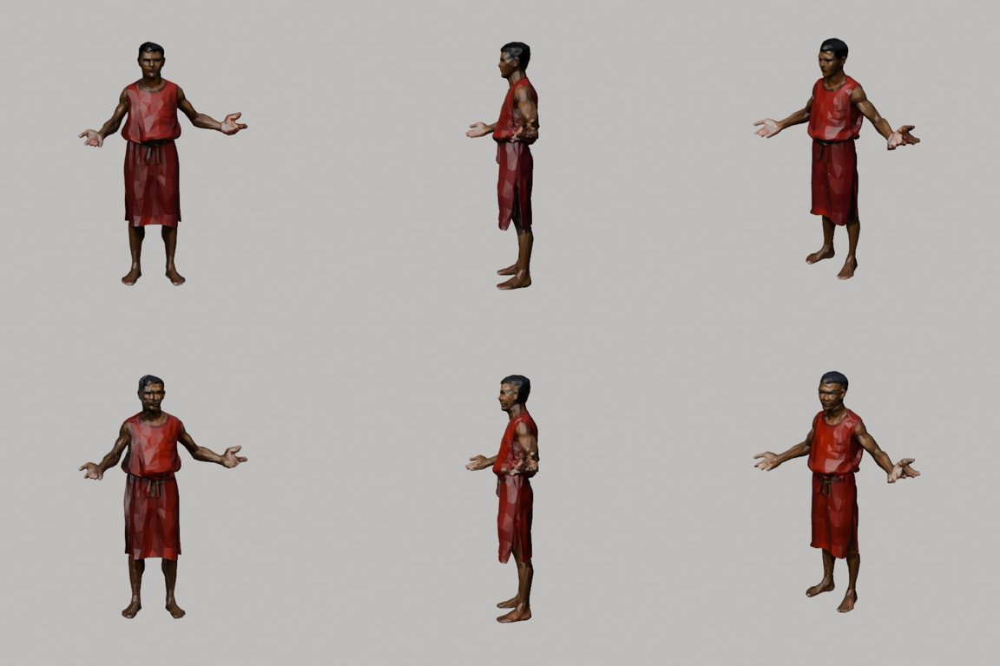

Pipeline 3D local proceso 47 · 2026-11-20
Pedido del autor: un pipeline repetible para regenerar y mejorar arte y modelos más adelante. Todo armado de punta a punta.
Un comando
tools/gen3d_pipeline.py <pieza|--todas>, con las piezas en data/gen3d_piezas.json. Pasos con firma (se saltean si nada cambió): referencia (imagen o FLUX) → forma (Hunyuan3D-2mini/2mv turbo) → limpieza en Blender (suelo, diezmado) → textura (Hunyuan3D-Paint o proyector) → rig (humano o cuadrúpedo) → final (tamaño del juego, GLB en assets/generados/modelos/local/).
| Pieza | Forma | Textura | Rig | Medidas (casillas) | GLB |
|---|---|---|---|---|---|
| Aldeano | 2mv turbo, 145 mil → 4000 caras | Paint, 11 s | 19 huesos KayKit | alto 0,75 | 711 KB |
| Kancha | 2mini turbo, 550 mil → 4000 | Paint, 11 s | — | 1,40 × 1,26 × 1,90 | 502 KB |
| Kallanka | 2mini turbo, 189 mil → 5000 | Paint, 10 s | — | 2,40 × 0,86 × 1,41 | 562 KB |
| Caballo | 2mini turbo, 204 mil → 4000 | Paint, 11 s | 20 huesos, caminar y quieto | alto 0,79 | 741 KB |
Antes y después










Rig en Godot








Paint contra el proyector


Paint gana en las cuatro piezas; el proyector queda de respaldo (--textura proyector).
Detalle
Paso a paso, tropiezos y commits en README.md.